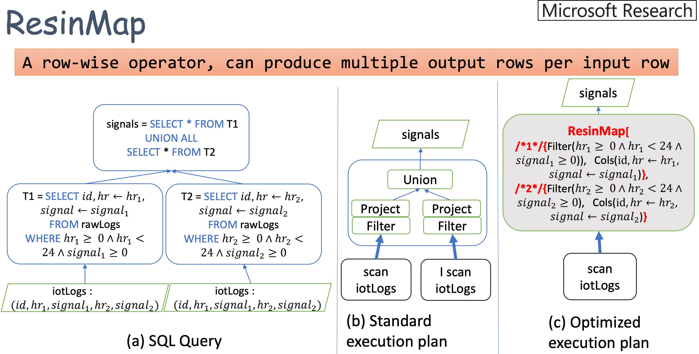

It’s been a long time for me to visit MapReduce related papers although this was my main game back in PhD study. Since my graduation, my focus has been shifted to storage with my job. As a result, a lot of papers presented here are storage related. This is also one of the reasons I started reading papers as I know too little about storage research. However, I have been still reviewing a lot papers in journals about MapReduce, Big Data and Spark. This is a nice surprise that people still care about MR enough to still perform research around and be able to publish in top conferences with this topic in 2020. Today’s paper is one example. It’s a query plan optimizer called Resin for improving MR job performance on Big Data queries. Let’s jump right into it.
Motivation
- Big data query is usually translated into MR jobs for scalable processing. This procedure is called Query Compilation (QC).
- Existing QC tools generate too many stages that require a lot of shuffle operations, which causes a big network I/O overhead that blocks the MR job performance.
- The reason that it generates so many stages is that the QC generates plan that causes a lot of data re-scanning.
- TPCDS benchmark on Spark shows 40% queries have redundant I/O.
- 16% of all queries, High-impact spend at least 50% time on stages with redundant I/O.
Design (Resin)
- Resin considers both SQL and MR together during QC with subquery fusion and binary elimination. Goal is simply producing less stages.
- Subquery fusion: combine different queries into one with ResinMap and ResinReduce to reduce the number of stages.
- Binary elimination: using fusion to eliminate SQL operations like
joinandunion.
- ResinMap: allow multiple queries in one map operator
- ex: join query with T1 and T2 will cause only one scan due to querying both T1 and T2 in one map phase.

- ResinReduce: combine filter conditions into one condition for only one pass
- ex: join query with C1: id > x and C2: id < y, to a single condition C: x < id > y.
Evaluation
- Method:
- TPCDS 1TB and 10TB data sizes.
- 40/140 queries with redundant I/O are used.
- Results:
- 1.1-6X speed up.
- Reduced Disk I/O activity size, while memory usage is the same (implies that the data is reduced, disk I/O is not reduced because data are cached in DRAM).
Comment
I like this kinds of papers as they are so simple. It seems it didn’t take them awful times to publish in a top-tier conference. The idea is simple: since we see a lot of shuffles in SQL queries like join and union, how about we do multiple operations in a single map and reduce phase to reduce the shuffle? Simple as that, and it works. I guess the good point is they picked a not so hot area (as of now), and found a very good problem to tackle. I just like the whole thing is simple and effective, which is quite the opposite of the last paper CrossFS with a lot of implementation and brownie design points that seems driving them crazy for publishing to this conference.